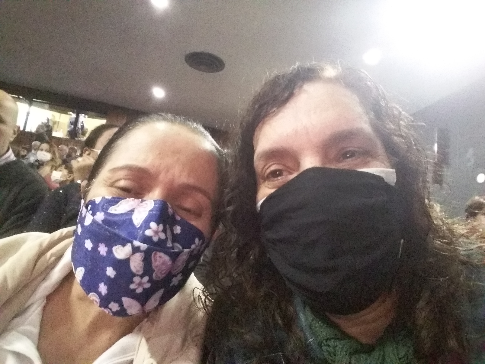
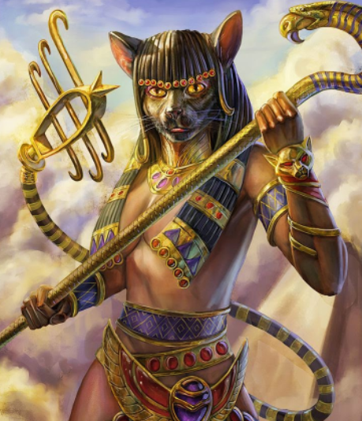
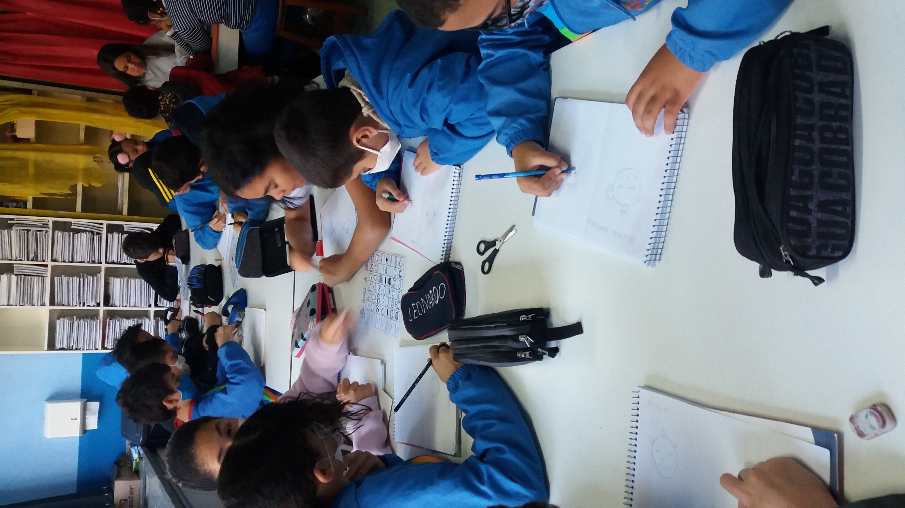
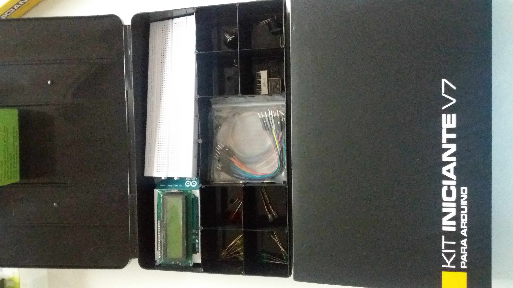
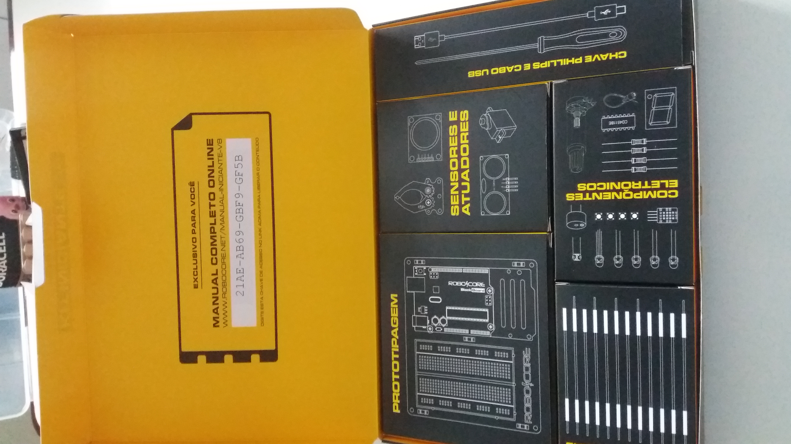

Sou professora de Arte desde 2014 na rede municipal de São Bernardo do Campo
Meu ícone è BASTET. Deusa egípcia que representa a música e a dança.


Este Projeto de robótica apresentado em SBC
Este Video no site youtube sobre Brinquedos incríveis para fazer em casa.
|  |  |
|---|---|
| Kit Arduíno Iniciante V7 | Kit Arduíno Iniciante V8 |